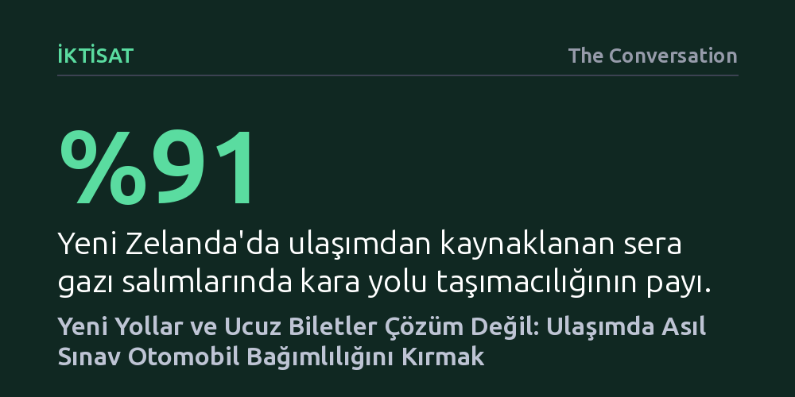

IKTISAT · The Conversation · 2026-10-23
Yeni yollar yapmak ya da biletleri ucuzlatmak, haneleri otomobil bağımlılığından ve yükselen maliyetlerden tek başına kurtaramaz. Kalıcı çözüm; devasa otoyollar yerine insanlara arabasız yaşama imkânı tanıyan, güvenilir ve pratik ulaşım alternatifleri sunmaktan geçiyor.
Trafik sıkışıklığı ve hayat pahalılığının yeni otobanlar inşa ederek değil, otomobili bir mecburiyet olmaktan çıkaran güvenilir ve yerel alternatifler üreterek çözülebileceğini gösteriyor.

Seçim dönemlerinde ulaşım yatırımları genelde iki zıt kutba sıkışır. Bir yanda yeni otoyolları ekonomik kalkınmanın ve verimliliğin lokomotifi olarak sunan sağ partiler, diğer yanda ise kamu kaynaklarıyla toplu taşımayı sübvanse etmeyi vadeden sol partiler yer alır. Ancak bu hararetli siyasi tartışmalar yürütülürken, sokaktaki hanelerin yüzleştiği yakıcı ekonomik gerçekler çoğunlukla göz ardı edilir. Tırmanan akaryakıt fiyatları karşısında ne yıllar sonra tamamlanacak yeni otobanlar ne de devletin depoladığı stratejik yakıt rezervleri sürücülerin cüzdanındaki yangını kısa vadede söndürebilir.
Dahası, sadece bilet fiyatlarına üst sınır getirmek ya da seferleri sübvanse etmek de tek başına deva olamaz. Çünkü bir güzergâhta güvenilir, sık ve dakik bir toplu taşıma ağı yoksa, biletin ucuz olmasının vatandaşa hiçbir faydası bulunmaz. Yeni Zelanda genelinde milyonlarca insan için otomobil kullanmak bir tercih veya lüks değil, işe, okula ve markete ulaşabilmenin tek yolu; yani kaçınılmaz bir zorunluluktur. Son yıllarda atılan adımlar da bu kronik bağımlılığı hafifletmekte yetersiz kalmıştır.
Otomobile dayalı bir ulaşım sistemi yalnızca ulusal karbon bütçesini tüketmekle kalmaz, hane bütçelerini de derinden sarsar. Yeni Zelanda'da sera gazı salımlarının yüzde 18'i ulaşımdan kaynaklanırken, bu emisyonların yüzde 91'i doğrudan kara yolu taşımacılığından çıkmaktadır. Buna rağmen kamu kaynaklarının ezici bir çoğunluğu hâlâ otoyol projelerine ayrılmakta; yürüme ve bisiklet altyapısına ise neredeyse kaynak aktarılmamaktadır. Yetkililerin bisiklet ve yaya projelerine bütçe ayıramayışlarını "kullanılabilir fon yok" gerekçesiyle açıklaması, yatırım önceliklerinin ne denli tek taraflı belirlendiğini özetler.
Bu çarpık yapı aile bütçelerinde de büyük bir yanılsamaya yol açar. Örneğin daha uygun fiyatlı bir ev almak için şehir merkezinden uzak banliyölere taşınan bir aileyi ele alalım. Konut kredisinde tasarruf ettiklerini düşünürken, banliyöde yeterli toplu taşıma bulunmadığı için yetişkinlerin her biri ayrı birer otomobil edinmek zorunda kalır. Kredi taksitleri, kasko, sigorta, periyodik bakım ve yakıt masrafları üst üste bindiğinde, ucuz konuttan elde edilen tasarruf tamamen eriyip gider. Üstelik kapıda bir araç durduğunda, toplu taşımaya binmenin ekonomik teşviki de azalır; zira otomobilin sabit giderleri zaten ödenmiştir ve otobüs bileti doğrudan benzin ve otopark parasıyla rekabet etmek zorunda kalır.
Trafiği çözmek için yeni yollar inşa etmek ilk bakışta en akla yatkın çare gibi görünür. Oysa ulaştırma iktisadında ve yapılan geniş çaplı araştırmalarda net bir gerçek vardır: Yeni bir şerit açıldığında trafik kalıcı olarak rahatlamaz. Sürücüler güzergâhlarını değiştirir, daha yoğun saatlerde yola çıkmaya başlar veya daha önce kaçındıkları yolculuklara yönelirler. ABD şehirleri üzerinde yapılan ampirik çalışmalar, eyaletler arası otoyol kapasitesi arttıkça araç trafiğinin de neredeyse birebir oranda arttığını kanıtlamaktadır. Dolayısıyla daha fazla asfalt dökerek trafik sıkışıklığını çözme vaadi, bilimin defalarca çürüttüğü bir yanılsamadan ibarettir.
Madalyonun diğer yüzünde ise kamu maliyesini bekleyen devasa bakım faturaları yer alır. Yeni Zelanda Altyapı Komisyonu Te Waihanga'nın hesaplamalarına göre, gelecekteki altyapı bütçesinin yaklaşık yüzde 60'ı sadece mevcut yapıların yenilenmesi ve korunması için harcanmak zorundadır. Açılan her yeni otoyol, gelecek nesillerin ve vergi mükelleflerinin sırtına eklenecek devasa bir bakım ve onarım borcu anlamına gelir. Auckland'da yeni açılan City Rail Link raylı sistem hattının ilk haftasında 528 binden fazla yolcu taşıması, halkın kaliteli toplu taşımaya ne kadar açık olduğunu göstermiştir. Ancak bu ilgiyi kalıcı kılmak, sadece beton dökmekle değil, kesintisiz işletme desteği ve entegre aktarma hatları sağlamakla mümkündür.
Önümüzdeki dönemde sürücüleri yol kullanımını ücretlendirme biçiminde köklü değişiklikler bekliyor. Hükümet, akaryakıt üzerindeki maktu vergileri kaldırarak bunun yerine katedilen mesafeye göre ödeme yapılan bir yol kullanım ücreti sistemine geçişi planlıyor. Bunun yanı sıra yerel yönetimlere, yoğun saatlerde trafiği hafifletmek amacıyla tıkanıklık ücreti uygulama yetkisi tanınıyor. Ancak bu politikaların dar ve orta gelirli haneleri cezalandırmaması için, şehir merkezinden uzakta yaşayanlara gerçekçi, dakik ve bütçeye uygun toplu taşıma alternatiflerinin önceden sunulması şarttır.
Gerçek bir ulaşım reformu için her zaman on yıllar sürecek milyarlarca dolarlık mega projelere gerek yoktur. Yerel yönetimlerin tek bir görev süresi içinde mevcut bir otobüs şeridini uzatması, tehlikeli bir yaya geçidini güvenli hâle getirmesi veya mahalleler arası aktarma sıklığını artırması çok daha hızlı ve etkili sonuç verir. Bir ulaşım politikasının başarısı, insanlara sadece ucuz bilet sunmasıyla değil; onları iki araba yerine tek bir arabayla, hatta hiç arabaya mecbur kalmadan yaşayabilecekleri pratik bir hareket özgürlüğüne kavuşturmasıyla ölçülmelidir.